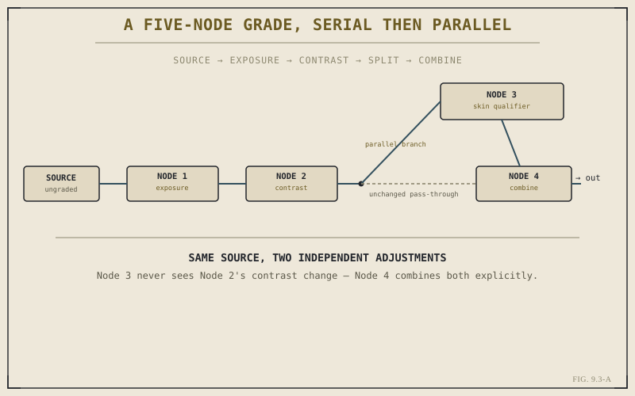

Chapter 1.3 introduced the node graph in the abstract, using a hypothetical grading example to explain why Resolve's Color and Fusion pages don't work like a layer stack, and promised this part would make the idea concrete once you had real footage and a real reason to build one. Chapter 9.2 gave you the scopes to evaluate a grade objectively. This chapter gives you the actual workspace: the Color page's node graph, where a grade is assembled one small, legible step at a time rather than as a single sprawling adjustment.
Serial Nodes, Applied
The everyday shape of a Color page node tree is close to a straight line, exactly as Chapter 1.3 described: one node handling a broad exposure correction, feeding into a second node handling contrast, feeding into a third handling an overall tint. Each node sees only the result of the one before it, refining rather than replacing. There's a real, practical reason to split a grade this way instead of making every adjustment in one place: each node can be isolated, toggled off, and evaluated against the scopes from Chapter 9.2 on its own, which turns "something about this shot looks off" into a fast process of elimination rather than a guessing game across one dense set of controls.
A Concrete Parallel Branch
Chapter 1.3's example — a broad contrast adjustment and a skin tone qualifier that should both start from the same untouched source, independently — is precisely the situation Chapter 9.5 will build in detail. Here, it's worth seeing the shape of it now that you have a specific tool in front of you. After the serial correction nodes, the graph branches: one path continues untouched into a node that isolates skin, while the original path carries on with whatever broad correction preceded it. Neither path is aware of the other's changes. A final node combines both results, and only there do the two adjustments actually meet.

Node 3 never sees Node 2's contrast change — Node 4 combines both explicitly.
A node graph doesn't just organize a grade. It makes the order of decisions visible, on the screen, as a shape — which is exactly what lets you isolate one step, evaluate it against a scope, and trust the rest of the tree while you do.
Why This Beats One Giant Adjustment
It's technically possible to chase most of a grade's goals from a single correction node, stacking every wheel and curve adjustment into one place. Almost no working colorist actually does this, for the same reason few editors build an entire sequence's audio in one giant, undifferentiated pass. A single dense node hides which adjustment is responsible for which problem, and undoing one specific decision means untangling it from everything layered on top of it. Splitting the same work across several small, purpose-named nodes costs nothing in the final image — the math combines identically either way — and buys you a grade you, or someone else, can actually read back later.
Reading a Graph Someone Else Built
That readability is worth naming directly, because it matters beyond your own working session. A well-organized node tree, with nodes labeled for what they do rather than left as generic numbers, functions as documentation of every correction decision made on a shot — exposure here, contrast there, a skin isolation branching off before this point. Opening someone else's project and finding a labeled, logically ordered graph tells you immediately what's already been decided and where. Opening a single, unlabeled node with everything crammed into it tells you nothing except that work happened. The habit of building serial and parallel structure deliberately, which the rest of this part will keep leaning on, pays for itself here as much as it does in the image itself.
Key Concepts to Remember
- Serial nodes on the Color page behave like a layer stack — most everyday grading work is a short serial chain of small, focused steps.
- A parallel branch lets a broad correction and an isolated adjustment, like a skin qualifier, both start from the same untouched source and combine explicitly.
- Splitting a grade across small, purpose-named nodes costs nothing in the final image and makes each step isolatable and testable against the scopes.
- A labeled, well-ordered node tree is documentation of every correction decision made on a shot — legible to you later, or to anyone else who opens it.
Cross-References Forward
| → Ch. 9.4 | Primary Correction: Lift, Gamma, Gain — the tool that typically fills the first serial node in a grade. |
| → Ch. 1.3 | Revisit the node graph idea in its original, generic form — the direct source of this chapter's serial and parallel structure. |
| → Ch. 9.2 | Revisit the scopes now used to evaluate each individual node in a graph like this one. |